6 Hours Ago - GNOME - GNOME AI Assistant App - 5 Comments
Hitting the "1.0" milestone last summer was the GNOME AI virtual assistant app called Newelle. This third-party GNOME app has continued evolving as an AI-focused assistant on the GNOME desktop and has now rolled out MCP server support to integrate with "thousands" of other apps.
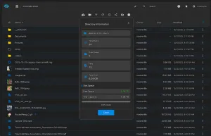
8 Hours Ago - Linux Storage - TrueNAS WebShare - Add A Comment
For situations where Samba (SMB) or NFS usage aren't appropriate or desiring the convenience of accessing files from a web browser on any device, TrueNAS is introducing TrueNAS WebShare as an easy-to-use solution for enterprise-grade file sharing in the web browser.
10 Hours Ago - WINE - Wine 11.0-rc5 - 3 Comments
With no Wine 11.0 release candidate last Friday due to the New Year festivities, Wine 11.0-rc5 is out today and it comes packing 32 bug fixes for the past two weeks.
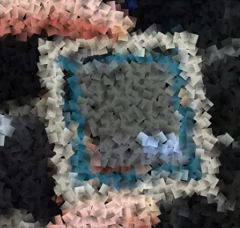
9 January 11:16 AM EST - Radeon - AMDGPU Next - Add A Comment
AMD today sent out their latest pull request to DRM-Next of new AMDGPU/AMDKFD kernel driver changes they are looking to get into the next kernel cycle, which will either be known as Linux 6.20 or more than likely be called Linux 7.0. Notable with this week's pull request is enabling a lot of new GPU hardware IP blocks, including GC/GFX 12.1 as a new addition past the current GFX12.0 / RDNA4.
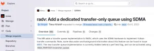
9 January 06:28 AM EST - Radeon - RADV Transfer Queue Via SDMA - 8 Comments
There is another open-source Radeon Vulkan driver (RADV) improvement to look forward to in the upcoming Mesa 26.0 release that was worked on by one of Valve's Linux graphics driver developers.
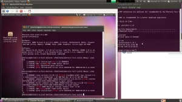
9 January 06:11 AM EST - Virtualization - QEMU 32-bit CPU Hosts - 21 Comments
The QEMU emulator already deprecated 32-bit host CPU support while for the QEMU 11.0 release this year they could eliminate the 32-bit host support for good.
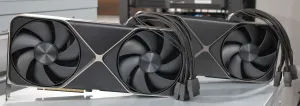
9 January 06:00 AM EST - Linux Kernel - Open-Source NVIDIA FIx - 3 Comments
Now past the end-of-year holidays, this round of Direct Rendering Manager (DRM) fixes for the in-development Linux 6.19 are a bit more meaningful following those light holiday weeks. Sent out today were the DRM fixes for Linux 6.19-rc5 that includes a fix for broken support for newer NVIDIA GPUs on the Nouveau open-source driver.
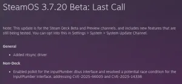
9 January 05:47 AM EST - Valve - SteamOS + NTSYNC - 8 Comments
Valve released the SteamOS 3.7.20 beta overnight and with it they are finally building the NTSYNC kernel driver for helping accelerate Windows NT synchronization primitives.
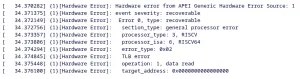
9 January 05:36 AM EST - RISC-V - RISC-V RAS - 2 Comments
The latest work by Qualcomm on the RISC-V CPU architecture is sending out their first non-RFC patch series for enabling Reliability, Availability and Serviceability (RAS) support by making use of the RISC-V RERI specification. This RISC-V RAS support is useful for conveying hardware errors to users and will be especially important with future RISC-V Linux servers.
8 January
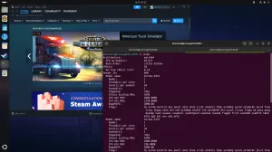
8 January 08:25 PM EST - Ubuntu - Steam + FEX on Ubuntu ARM64 - 10 Comments
Canonical is making it easier for ARM64 Ubuntu users like those on the NVIDIA DGX Spark to do a bit of gaming with Steam. Canonical engineers have assembled a Steam Snap for 64-bit ARM that comes complete with the FEX emulator for running Windows/Linux x86-based games on ARM64 Linux.
8 January 03:19 PM EST - Radeon - RADV Ray-Tracing - 16 Comments
The RADV ray-tracing improvement covered earlier this week for some big performance gains for Unreal Engine 5 titles running under Linux thanks to Steam Play has been merged for Mesa 26.0.
8 January 01:34 PM EST - Hardware - Logitech MX Anywhere 3S - 18 Comments
For those that happen to have a Logitech MX Anywhere 3S mouse connected via Bluetooth, the upcoming Linux 6.19 kernel release is enabling HID++ support for it to enjoy high resolution scrolling and other functionality of the updated protocol.
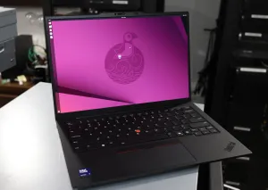
The Intel Mesa graphics drivers have supported a GPU hardware replay feature for making it easier to reproduce issues. But until now that functionality has only worked with the i915 kernel driver while for Mesa 26.0 the Intel Xe driver will also be supported.
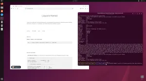
8 January 10:00 AM EST - Software - 18 Comments
It's been a while since running benchmarks of the Liquorix kernel as an enthusiast-tailored downstream version of the Linux kernel focused on responsiveness for gaming, audio/video production, and other creator/enthusiast workloads. In today's article is a look at how the latest Liquorix kernel derived from Linux 6.18 is competing against the upstream Linux 6.18 LTS kernel on the same system.
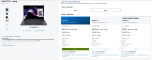
8 January 09:11 AM EST - Intel - And Many Shipping In February - 4 Comments
On Monday at CES Intel announced Panther Lake as Core Ultra Series 3 with the initial laptop designs to be available for pre-order starting the following day, 6 January, while global availability is expected around 27 January. Now a few days after pre-orders opened up, few options are available and some of the models will not be shipping until mid-February.
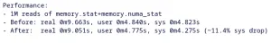
8 January 08:19 AM EST - Linux Kernel - printf restructuring - 4 Comments
A NVIDIA engineer restructuring some of the printf-related code within the memory resource controller "memcg" statistics printing code to reduce the system time by 11% for dumping those stats.
8 January 06:37 AM EST - AI - Linus Torvalds On Kernel AI Slop - 57 Comments
The Linux kernel developers for months now have been debating proposed guidelines for tool-generated submissions to the Linux kernel. As part of the "tools", the main motivator for this documentation has been around the era of AI and large language models with coding assistants and more. Torvalds made some remarks on the Linux kernel mailing list around his belief in focusing the documentation on "tools" rather than explicitly focusing on AI, given the likelihood of AI-assisted contributions continuing regardless of documentation.
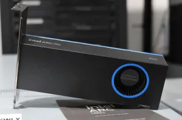
8 January 06:25 AM EST - Intel - dGPU Firmware Updating On Non-x86 - 5 Comments
The modern Intel Xe kernel graphics driver was designed from the start to be more broadly compatible with non-x86 architectures given their discrete graphics processors being front and center, unlike the legacy i915 kernel graphics driver being very x86 minded. While this allows running Intel Arc Graphics on ARM or RISC-V, there are some other kinks still being ironed out with using Intel graphics in the non-x86 world. One of those limitations currently being worked through is the lack of GPU firmware updating on non-x86 systems.
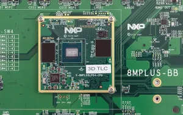
8 January 06:14 AM EST - Linux Kernel - PPU Flop Reset - Add A Comment
Sent out today was the latest batch of drm-misc-next changes to DRM-Next for staging ahead of the upcoming Linux 6.20~7.0 kernel cycle. The reverse-engineered Etnaviv DRM driver for Vivante graphics/NPU hardware has added a new "PPU flop reset" feature gleaned off studying the downstream vendor kernel driver.
8 January 05:53 AM EST - Linux Kernel - Linux x86 PIE - 2 Comments
To allow for additional security hardening of the Linux kernel, a patch series has been updated more than one year later to link the relocatable x86_64 kernel as Position Independent Executable (PIE) code.
7 January
7 January 08:03 PM EST - Free Software - FEX-Emu 2601 - 19 Comments
FEX, the open-source emulator for running x86 and x86_64 binaries on AArch64 (ARM64) Linux and that is sponsored by Valve and to be used by the Steam Frame, is out with a new monthly feature release.
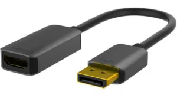
7 January 03:24 PM EST - Radeon - AMDGPU + DP-HDMI Dongles - 43 Comments
For those using a DisplayPort to HDMI dongle currently with the AMDGPU Linux kernel graphics driver may find some higher resolutions / modes unavailable. Fortunately, a fix is on the way for dealing with this situation due to an oversight in the kernel driver.
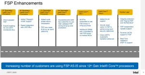
7 January 01:24 PM EST - Intel - Firmware Support Package - 3 Comments
While for years open-source firmware enthusiasts have been after an open-source Firmware Support Package "FSP" for Intel CPUs and back during Raja Koduri's tenure at Intel it sounded like it might happen, it has yet to happen. But at least with the forthcoming Intel Core Ultra Series 3 "Panther Lake" there are some FSP improvements.
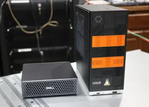
7 January 11:42 AM EST - Computers - 30 Comments
Over the past number of weeks the Dell Pro Max with GB10 has been undergoing a lot of testing at Phoronix. This NVIDIA GB10 powered mini PC with its 20 Arm cores (10 x Cortex-X925, 10 x Cortex-A725) and Blackwell GPU offers a lot of combined compute potential for AI and other workloads. In this article is a look at how the Dell Pro Max with GB10 competes with AMD's Ryzen AI Max+ 395 "Strix Halo" within the Framework Desktop SFF PC.
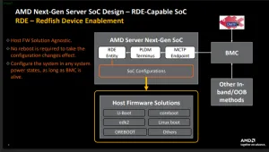
7 January 10:31 AM EST - AMD - Firmware Configuration Improvements - Add A Comment
Next-generation AMD server SoCs -- presumably the AMD EPYC "Venice" on Zen 6 -- is poised to introduce a firmware-agnostic platform configuration platform configuration change method/format. This is This aims to improve server platform interoperability and eliminate redundant configuration efforts for different firmware solutions.
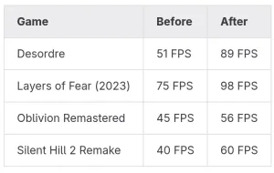
7 January 06:18 AM EST - Radeon - More RT Performance! - 26 Comments
Natalie Vock as one of the open-source developers on Valve's Linux graphics team has been spearheading another big ray-tracing performance improvement for the AMD Radeon Vulkan driver. RADV ray-tracing performance improved a lot in 2025 but it's looking like 2026 could be even more exciting.
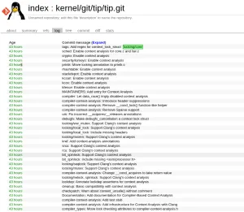
7 January 06:05 AM EST - Linux Kernel - Compiler-Based Locking Analysis - 2 Comments
A new feature in the queue for likely introduction with the next version of the Linux kernel (Linux 6.20~7.0) is compiler-based context and locking analysis. This kernel code depends on the yet-to-be-released LLVM Clang 22 compiler but can provide some powerful insights to kernel developers.
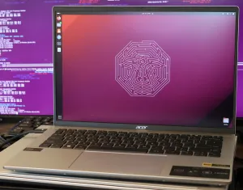
7 January 05:51 AM EST - Hardware - Acer Laptop Battery Control - 2 Comments
For those with Acer laptops running Linux on GitHub there has been an out-of-tree driver providing an experimental "acer-wmi-battery" kernel module to allow controlling battery-related features. Now a cleaned-up version of that driver is working on getting into the mainline Linux kernel.
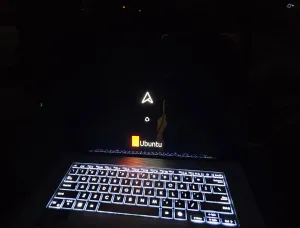
7 January 05:40 AM EST - Linux Kernel - DRM Splash Screen v2 - 6 Comments
Back in October was an initial proposal for a DRM splash screen client for the Linux kernel that would be primarily useful for embedded systems for rendering a simple "splash screen" when updating the system firmware/software, early display activation at boot, during system recovery, or similar processes. Sent out today was a second revision to the DRM splash screen code.
6 January
6 January 08:31 PM EST - Linux Storage - Dropping The Old Mount API - 14 Comments
The Linux kernel's "new mount API" that has been in the kernel since 2019 and recently made rounds for taking 6+ years to land the man page documentation on it will soon be the the only mount API internally within the kernel. Removing the "old" Linux kernel mount API internals is a candidate for the upcoming Linux 7.0 kernel cycle.
6 January 05:47 PM EST - Operating Systems - Gentoo 2025 - 15 Comments
The Gentoo Linux project published their 2025 retrospective this week with their many accomplishments, including the recruitment of four more developers and now being up to 31,663 ebuilds and a total of 89GB worth of x86_64 binary packages on mirrors.
6 January 02:28 PM EST - Fedora - Fedora KDE Switching Away From SDDM - 50 Comments
The Fedora Engineering and Steering Committee (FESCo) has approved a Fedora 44 change for switching all KDE variants away from using the SDDM display manager to instead use the newer Plasma Login Manager.
6 January 11:55 AM EST - Operating Systems - Redox OS Intel Graphics Driver - 26 Comments
The Rust-written Redox OS operating system had an exciting end to the year as it began developing its own native Intel graphics driver.
6 January 10:45 AM EST - Memory - 24 Comments
With some Linux distributions like Fedora Workstation and Ubuntu defaulting to "madvise" Transparent Hugepages (THP) while others like CachyOS and openSUSE defaulting to "always", you may be curious about the madvise vs. always THP difference in modern Linux environments. If so this round of benchmarking is for you in looking at the performance impact of madvise vs. always THP.
6 January 09:05 AM EST - LLVM - LLVM Clang Build Speed - 27 Comments
LLVM developers and other stakeholders have begun debating the use of pre-compiled headers "PCH" as a means of speeding up the compiulation of the LLVM compiler infrastructure by 1.5x to 2x than with non-PCH builds.
6 January 08:52 AM EST - Valve - Increase - 39 Comments
Back on the 1st Valve published the Steam Survey results for December 2025 and they put the Linux gaming marketshare at 3.19%, a 0.01% dip from November. But now the December results have been revised with a nice bump to the Linux marketshare.
6 January 06:34 AM EST - Free Software - Flatpak + GPU Virtualization - 70 Comments
Open-source developer Sebastian Wick has written a blog post outlining work to improve the graphics driver situation for Flatpaks. Particularly around situations like the NVIDIA driver stack that may depend upon a specific kernel version or where a Flatpak runtime may be end-of-life, dealing with GPU drivers in Flatpaks can be a burden. A solution being explored is GPU virtualization to deal with those GPU driver handling challenges while still providing robust and secure GPU access.
6 January 06:28 AM EST - AI - AMD GAIA 0.15 - Add A Comment
Last year AMD announced GAIA as short for "Generative AI Is Awesome". It started off as a Windows-only AI demo but over time added Linux support along with introducing different AI agents. For going along with AMD's AI announcements at CES 2026, AMD released GAIA 0.15 where they are now positioning this software as a framework/SDK for building AI PC agents.
Yesterday when Intel formally introduced Panther Lake as the Core Ultra Series 3 with pre-orders set to begin today and available globally later this month, one of the key questions remaining was around pricing... I've been scouting various Internet retailers today and so far have found a Ultra X7 358H model with the 12 Xe cores for the Xe3 integrated graphics to be priced around $1299 USD with 32GB of RAM.
6 January 05:58 AM EST - Multimedia - GStreamer 1.28 - 14 Comments
On Monday the first release candidate of the GStreamer 1.28 multimedia framework was released. As is a recurring focus in recent releases, more GStreamer code is written in Rust for memory safety especially around decoding content.
5 January
5 January 06:37 PM EST - Intel - Intel CES 2026 - 12 Comments
Intel just hosted their CES keynote where they formally launched Panther Lake as the Core Ultra Series 3 SoCs.
5 January 03:43 PM EST - Radeon - Radeon GPU + NPU? - 7 Comments
Back in November AMD began posting open-source Linux graphics driver patches for some next-gen graphics IP. Those IP block patches were for MMHUB, PSP, and other blocks making up modern AMD GPUs. The GFXHUB patch pointed it to being part of the GFX12 / RDNA4 family. Out today are new patches for enabling the SMU15 IP and an interesting takeaway there is some apparent NPU integration for future Radeon graphics.
5 January 12:52 PM EST - GNOME - Middle Click Paste - 223 Comments
Both the GNOME desktop and Mozilla Firefox browser projects are considering disabling middle-click-paste functionality by default.
5 January 12:22 PM EST - Mesa - Mesa Git Stats - 10 Comments
A developer from Valve working on the RADV Vulkan driver was once again the most prolific contributor to Mesa in 2025 followed by AMD's Marek Olšák with continued improvements around RadeonSI and Gallium3D.
5 January 12:00 PM EST - Radeon - Mesa 26.0-devel - 23 Comments
Konstantin Seurer as one of the open-source developers working on the RADV driver for Valve has landed another ray-tracing performance optimization for the upcoming Mesa 26.0 release.
5 January 09:56 AM EST - Apple - Apple Silicon Power Driver - 14 Comments
The newest open-source Apple Silicon driver being submitted for review in working toward its inclusion in the mainline Linux kernel is the Apple Silicon SMC power driver for being able to expose MacBook battery power metrics as well as AC power adapter status reporting under Linux.
5 January 09:13 AM EST - Arm - Acer Swift SFA14-11 - 9 Comments
Patches posted to the Linux kernel mailing list are hoping to provide mainline support for the Acer Swift SFA14-11 laptop powered by the Qualcomm Snapdragon X1 Elite X1E78100 SoC.
5 January 08:22 AM EST - Intel - Transparent Hugepages For Xe Driver - 5 Comments
Intel engineer Francois Dugast today sent out the new patch series for enabling Transparent Hugepages (THP) support within the drm_pagemap code with a focus on the Intel Xe kernel driver usage. This enabling of THP support and in turn 2MB pages by the Xe driver is yielding "significant" performance improvements when using Shared Virtual Memory (SVM) such as for GPU compute workloads.
5 January 06:15 AM EST - Linux Kernel - Linux AES Library - 1 Comment
A set of 36 patches sent out overnight is making big improvements to the Linux kernel's AES library. The patches allow for making use of the kernel's existing architecture-optimized AES code for better performance, that code is also constant-time, lower memory use, and all-around a nice improvement over the status quo.
5 January 06:00 AM EST - Debian - Debian Data Protection Team - 46 Comments
Besides Debian's aging bug tracker interface, another challenge as the Debian Linux distribution project begins 2026 is that all volunteers have left their Data Protection Team. The Debian Data Protection Team deals with General Data Protection Regulation (GDPR) issues and related data protection/privacy related matters.
5 January 05:46 AM EST - Radeon - AMD RDNA4 + RGP 2.6 - Add A Comment
Merged back in December for Mesa 26.0 was RADV now supporting some new performance counters to help game developers and open-source driver developers. That new performance counter support aligned with the AMD GPUOpen Radeon GPU Profiler 2.6 release. At first those new performance counters were wired up for RDNA1 through RDNA3.5 GPUs while now the support has arrived for the latest RDNA4 GPUs.
While veteran open-source developer Keith Packard is known for his X.Org Server contributions over many years, another more recent open-source creation of his is Picolibc as a C library for embedded systems. As the latest achievement on that front, merged this weekend to the GCC 16 compiler codebase is support for using Picolibc.